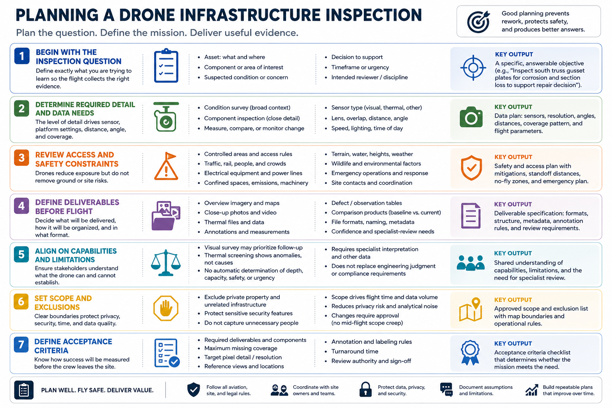

Inspection Objectives and Scope
Connecting to LMS... Progress: in progress

Narration
Begin with the inspection question. Define the asset, component, suspected condition, decision, timeframe, and intended reviewer. A request to inspect a bridge is too broad; a useful objective identifies which areas and evidence are needed.
Required detail determines sensor, lens, distance, angle, speed, and coverage. A broad condition survey needs context, while a small component may need close visual evidence collected from a safe authorized standoff.
Review access and safety constraints. Consider controlled areas, traffic, rail, electrical equipment, confined spaces, emissions, moving machinery, people, wildlife, terrain, and emergency operations. The drone does not remove ground risk or site coordination.
Define deliverables before flight: overview images, close-ups, video, thermal files, maps, annotations, defect tables, or comparison products. Specify resolution, location context, naming, metadata, confidence, and specialist-review needs.
Stakeholders should agree on what the drone can and cannot establish. A visual survey may prioritize follow-up without certifying asset condition. Thermal screening may identify an anomaly without diagnosing its cause.
Set explicit exclusions for private areas, unrelated infrastructure, sensitive security features, and unnecessary people. Scope controls flight time, privacy, data volume, and analytical noise. Changes should be approved rather than improvised during collection.
Define acceptance criteria for the deliverable. Required components, maximum missing coverage, target pixel detail, reference views, annotation rules, turnaround, and review authority should be understood before the crew leaves the site.